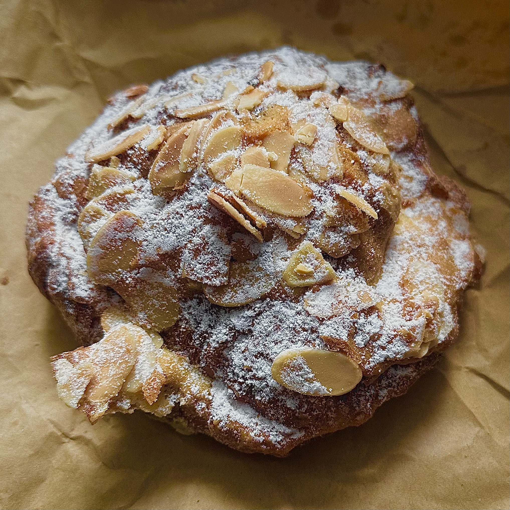

crisp, buttery, delicately flaky layers of croissant. a generous bed of almond frangipane -- the pasty (superior) kind -- glued to the interior of each half. all in all, this is exactly what I'd wish for in an almond croissant. Pink Lane Bakery should be proud of themselves for making a masterpiece of this classic pastry.